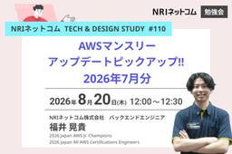
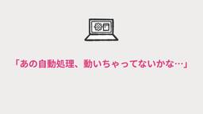
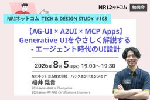
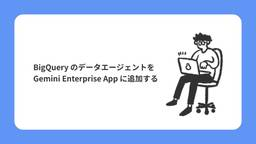
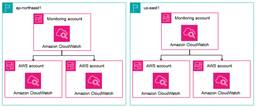

NRIネットコムBlog
https://tech.nri-net.com/
NRIネットコム社員が業務で利用している幅広い技術やナレッジについて紐解くブログメディアです。
フィード

AWSマンスリーアップデートピックアップ!! 2026年7月分 ～NRIネットコム TECH AND DESIGN STUDY #110～
NRIネットコムBlog
こんにちは、ブログ運営担当の遠藤です。 8/20（木）12:00～12:30 当社主催の勉強会「NRIネットコム TECH AND DESIGN STUDY #110」が開催されます!! 今回のTECH & DESIGN STUDYでは、日々数多く発表されているAWSのアップデートのうち、当社の腕利きエンジニア目線で厳選した前月のアップデート情報をお話させていただきます！ 登壇者 福井 晃貴 バックエンドエンジニア 大規模システムのエンハンスに従事し、Java・Spring Bootを用いた機能実装からテスト・運用保守まで担当している。 2026 Japan AWS Jr. Champions…
14時間前

AIの応答時間の不確実性を解決するAWS Lambda Durable Functions
NRIネットコムBlog
本記事は AWSアワード受賞者祭り 2026 9日目の記事です。 🏆 8日目 ▶▶ 本記事 ▶▶ 10日目 🌐 こんにちは、玉邑です。 最近では、AIを業務に活用することが当たり前になってきましたね。 システム開発の現場でも同様に、AIの応答をバックエンドシステムで利用するユースケースが増加しています。 そのようなユースケースに合わせてAWSでもさまざまなアップデートが行われてきています。 例えば、これまで「29秒の壁」と言われていたAPI Gatewayのタイムアウト時間がService Quotasで上限緩和できるようになったりと、ネットワークレイヤーにおける制約は従来よりも寛容になってい…
15時間前

知見が知見を生むチームへ ― 案件に一番詳しいAIをAgentCoreで作る ～NRIネットコム TECH AND DESIGN STUDY #109～
NRIネットコムBlog
こんにちは、ブログ運営担当の遠藤です。 8/12（水）12:00～13:00 当社主催の勉強会「NRIネットコム TECH AND DESIGN STUDY #109」が開催されます!! 発表概要 生成AIを配ったのに、各自バラバラのプロンプトで使い、案件知識（過去の経緯や暗黙知）はAIに溜まらず、品質はバラつく。よくある光景です。 今回のキーワードは「知見の複利」。チームの知見をAIが読める形で回し続けるほど、AIは案件に詳しくなっていきます。その複利を回すエンジンとして、Slackに常駐し過去の決定や設計原則とのズレを指摘する「プロジェクト専属AI」を、Bedrock AgentCore …
2日前

【AWS Systems Manager】休暇中の「あの自動処理、動いちゃってないかな…」をなくすChange Calendar
NRIネットコムBlog
本記事は AWSアワード受賞者祭り 2026 8日目の記事です。 🏆 7日目 ▶▶ 本記事 ▶▶ 9日目 🌐 はじめに AWS Systems Manager Change Calendarとは Change Calendarの仕組み カレンダーの2つのタイプ イベントの登録とインポート 夏休み前に設定してみる Step1. カレンダーを作成する Step2. 休暇期間のイベントを登録する Step3. カレンダーの状態を確認する 他のサービスと組み合わせて「本当に止める」 EventBridgeとの連携 CI/CDパイプラインからの利用 運用時の注意点 まとめ はじめに こんにちは、クラウド…
2日前

内製化、機能は揃っているのに「使いにくい」と言われる理由
NRIネットコムBlog
こんにちは、UI/UXデザイナーの田原です。 ここ数年、多くの企業様がビジネスのスピードを上げるために「プロダクト開発の内製化」を進めています。外部に頼らず、自社のスピード感でプロダクトを作っていく。理屈としては、とても筋の通った話です。 ただ、実際に内製化を進めた企業様から聞く声は、少し違います。 「機能はひと通り揃ったのに、現場から使いにくいと言われてしまった」 「要件の変更が多すぎて、開発チームが疲弊している」 「そもそも、何を目指して内製化したのか分からなくなってきた」 内製化そのものが間違っているわけではありません。 多くの場合、うまくいかない原因は「開発の進め方」そのものに潜んでい…
2日前

【AG-UI × A2UI × MCP Apps】Generative UIをやさしく解説する - エージェント時代のUI設計 ～NRIネットコム TECH AND DESIGN STUDY #108～
NRIネットコムBlog
こんにちは、ブログ運営担当の遠藤です。 8/5（水）19:00～19:30 当社主催の勉強会「NRIネットコム TECH AND DESIGN STUDY #108」が開催されます!! 発表概要 Generative UIは概念としては広がりつつあるものの、AG-UI,A2UI,MCPといったプロトコルが乱立し、それぞれのスタックの責務がどこにあるのか曖昧な方も多いのではないでしょうか。 今回は、これらのプロトコルについて一から整理し、実際のユースケースと絡めながらGenerative UIをやさしく解説していきます。 登壇者 福井 晃貴 バックエンドエンジニア 大規模システムのエンハンスに従…
3日前

GA4のGemini「Ask Advisor」はどこまで答えられる？GAプロパティ外の情報も聞いてみた
NRIネットコムBlog
GA4のGeminiを活用した新機能「Ask Advisor」（旧 Analytics Advisor）について検証します。
3日前

中途入社の私がAWS全冠を達成するまで
NRIネットコムBlog
本記事は AWSアワード受賞者祭り 2026 7日目の記事です。 🏆 6日目 ▶▶ 本記事 ▶▶ 8日目 🌐 はじめまして、NRIネットコムでクラウドエンジニアをしている長見と申します。 この度、2026年度のJapan All AWS Certifications Engineersに選出いただきました。 AWSアワード受賞者には様々な経歴や強みを持った方がたくさんいらっしゃるので、 「自分は何を書こうかな」と悩みましたが、今回はオンプレミス中心だった私がクラウドに転向し、 AWS認定資格を全冠するまでの話を書いてみたいと思います。 NRIネットコムに入社するまで 私はNRIネットコムに入社…
3日前

【Claudeも間違えた】Aurora リードレプリカは書き込める？~RDS for MySQL 移行での珍事象~ 1
1
NRIネットコムBlog
本記事は AWSアワード受賞者祭り 2026 6日目の記事です。 🏆 5日目 ▶▶ 本記事 ▶▶ 7日目 🌐 はじめに 1. きっかけ：「Aurora 昇格前なのに、Aurora にだけデータがある」なぜだ？ 予定していた作業 実際に行われた作業 発覚した事象 Claude への最初の質問 2. 仮説を立てては潰す Claude が出した仮説たち 検証で潰していった 3. 検証してみたら、全部覆った 検証手順 結果：書き込めた 4. Aurora リードレプリカとは何か？ 「リードレプリカ」という名称のトラップ 公式ドキュメントの記述 5. では昇格作業は何をしているのか 昇格で変わること 昇…
4日前

BigQuery のデータエージェントを Gemini Enterprise App に追加する
NRIネットコムBlog
こんにちは、デジタルマーケティング事業に携わっている神崎です。 本記事では、Google Cloud の BigQuery の UI 上で作成したデータエージェントを、Gemini Enterprise App に追加する方法について、解説します。 BigQuery のデータエージェントについては、以下の記事を参照してください。 tech.nri-net.com 今回紹介する内容は、東京ビッグサイトで開催される Google 社主催のイベント「Google Cloud Next Tokyo 26」で、2026年7月30日（木）に私が講演する内容と関連するものとなります。 よろしければ、以下のリ…
8日前

CloudWatchで実現する横断監視方法を考えてみる 3
NRIネットコムBlog
本記事は AWSアワード受賞者祭り 2026 5日目の記事です。 🏆 4日目 ▶▶ 本記事 ▶▶ 6日目 🌐 はじめに 監視における課題 大規模環境では、監視の入口が増えていく 監視の難しさは「データがない」ではなく「見方が揃わない」こと 「見る・調べる・残す」で分けて監視方針を考える CloudWatchで使える3つの横断監視機能 クロスアカウントオブザーバビリティ クロスアカウントクロスリージョン CloudWatch コンソール ログ一元化 3つの機能を比較してみる 中央化だけでは運用は楽にならない おわりに はじめに こんにちは。大林です。 大規模なAWS環境になると、監視対象のリソー…
8日前

【2026年版】改めてECSのデプロイ方法を整理する
NRIネットコムBlog
本記事は AWSアワード受賞者祭り 2026 4日目の記事です。 🏆 3日目 ▶▶ 本記事 ▶▶ 5日目 🌐 こんにちは。梅原です。 皆さんAmazon ECSは使っていますでしょうか？ Amazon ECSでよく利用されているBlue/Greenデプロイですが、 2026年5月のアップデートでついにLambda不要でデプロイ中の一時停止が可能になり、既存のCodeDeployを使ったBlue/Greenデプロイと同等の機能を持つようになりました。 aws.amazon.com このブログでは2026年7月現在、選択可能なECSデプロイタイプについて改めて整理します。 ローリングアップデート …
9日前
AWS BlocksとAmplify Gen2で同じアプリを作って比べてみた
NRIネットコムBlog
本記事は AWSアワード受賞者祭り 2026 3日目の記事です。 🏆 2日目 ▶▶ 本記事 ▶▶ 4日目 🌐 こんにちは、先日 息子と一緒に道路に出ていた亀を助けたので、恩返しはいつ来るのかなと首を長くして待っている志水です。さて、今日は、AWS Blocks と Amplify Gen2 で同じアプリを両方作って、どっちで運用するか決めてみた話です。 AWS Blocks（2026年6月のプレビュー版）が出てきたとき、最初にリリースを見て思ったのは「ローカルで開発しやすくなったAmplifyでしょ」くらいのものでした。もしローカル開発が本当に快適なら、次にスタックを選ぶときの候補としてアリか…
10日前
IAMポリシー評価ロジックのステップバイステップ — 明示的Deny・RCP・SCP・リソースポリシー・アイデンティティポリシー・Permission Boundary・セッションポリシー
NRIネットコムBlog
本記事は AWSアワード受賞者祭り 2026 2日目の記事です。 🏆 1日目 ▶▶ 本記事 ▶▶ 3日目 🌐 小西秀和です。 「IdentityポリシーでAllowを書いたのにAccessDeniedになる」「別アカウントのバケットにどうしても入れない」——AWS IAMの許可/拒否は、一見シンプルに見えて、実は7つの層を通り抜けた結果として決まります。本記事は、その評価ロジックを一段ずつ自分でトレースできるようになることをゴールに、図・ポリシーJSON・12個の具体ケースで、明示的Deny・RCP・SCP・リソースポリシー・アイデンティティポリシー・Permission Boundary・セ…
11日前
企業でAWS Organizationsを動かすための組織設計の考え方
NRIネットコムBlog
本記事は AWSアワード受賞者祭り 2026 1日目の記事です。 🏆 告知記事 ▶▶ 本記事 ▶▶ 2日目 🌐 こんにちは、佐々木です。今回は、企業でAWS Organizationsを動かすための組織設計について整理します。 AWS Organizationsの設計は、「OUをどう分けるか」「SCPで何を禁止するか」といった各論から議論が始まりがちです。しかし、そこから入ると判断の軸が定まらないまま、細かい設定の議論で行き詰まります。 この記事で扱うのは、その手前にある考え方です。AWSアカウントを「責任境界」として設計する、という視点です。ここを押さえると、IAM・統制・コストが、それぞれ…
12日前
Anthropic Claudeモデル リリース年表 － モデルファミリーツリー・機能進化・プラットフォーム提供状況
NRIネットコムBlog
小西秀和です。 これまでのブログ記事では、Amazon SQS、Amazon S3、AWS Lambda、Amazon Route 53、AWS KMSといったAWSサービスごとの歴史を年表形式で振り返る「歴史・年表でみるAWSサービス」シリーズの記事を書いてきました。今回はその非AWS編として、AnthropicのClaude基盤モデルファミリーを取り上げ、2023年3月に発表された初代Claude 1から2026年6月に発表されたClaude Fable 5・Claude Sonnet 5までのリリース年表を整理しました。 この記事では、Claude Opus・Claude Sonnet・…
17日前
生成AI × IaC時代のインフラ開発、TDDのエッセンスを取り入れることを考える
NRIネットコムBlog
こんにちは！長内です。 私が所属するチームでは、インフラ構築の自動化（IaC）を進めながら、開発品質の向上とチームの成長を目指してきました。そんな中で、「TDDのエッセンスを取り入れた開発スタイル」と「生成AIの全面活用」を組み合わせた新しい開発体制への移行を検討しています。 本ブログでは、これから挑戦していくにあたって考えていることを備忘録としてまとめました。まだ検討段階の内容も多いですが、一つの参考として読んでいただければ幸いです。 なお、ここで言う「TDD」は、厳密なRed ➔ Green ➔ Refactorサイクルを全場面で徹底するという意味ではありません。「先にテスト（仕様）を考え…
18日前
NRIネットコムBlog 6月アクセス数ランキング!!
NRIネットコムBlog
こんにちは、ブログ運営担当の池部です。 6月のブログアクセス数ランキングをご紹介します！！ （2026年6月1日~6月30日計測） 6月アクセス数TOP10 第1位 『エンタープライズAWSアカウント設計』を執筆しました。AWS Summit で先着500名様に無料配付します tech.nri-net.com 第2位 カバレッジの種類～C0・C1・C2・MCC～ tech.nri-net.com 第3位 Microsoft 365 Copilot Chat「カスタム指示」紹介 tech.nri-net.com 第4位 【初心者向け】Swaggerとは？シンプルに解説 tech.nri-net.…
18日前
2026 Japan AWS Jr. Champions ＆ 2026 Japan All AWS Certifications Engineers に選出いただきました
NRIネットコムBlog
はじめに Japan AWS Jr. Champions とは Japan AWS Jr. Championsになるために求められること 活動報告について Challenge Influence Output Jr. Champions選出に向けて意識していたこと 活動への意気込み 最後に はじめに こんにちは、福井です。 6月25日（木）APN Blogにて「2026 Japan AWS Jr. Champions」と「2026 Japan All AWS Certifications Engineers」が発表され、私もその一員として選出いただきました。入社してから1年が経ち、配属後に掲げ…
22日前
ブログイベント「AWSアワード受賞者祭り 2026」開催します!！
NRIネットコムBlog
こんにちは、ブログ運営担当の遠藤です。 7月、8月のブログイベントについてお知らせします！ 2026年6月25日に行われたAWSのイベント「AWS Summit Japan」にて、NRIネットコムの社員25名が選出・表彰されました！！ 🏆 2026 Japan AWS Ambassadors 🏆 2026 Japan AWS Top Engineers 🏆 2026 Japan AWS Jr. Champions 🏆 2026 Japan All AWS Certifications Engineers 今回は、選出・表彰を記念して、「AWSアワード受賞者祭り 2026」と題して受賞者がブログ…
23日前
Google AdsのAsk Advisor（β）を使ってみた｜既存アカウントで検証＆NGプロンプトも解説
NRIネットコムBlog
こんにちは。デジタルマーケティングコンサルタントの太田です。 Google Marketing Live 2026でGoogle AdsにAsk Advisor（β）が登場することが発表され、広告運用の現場でも「AIに相談しながら意思決定すること」が現実になりつつあります。 本発表は米国向けのものであり、日本国内における導入時期および展開詳細につきましては現時点では未定となっています。 しかし、Google Adsを英語 UIにすることでAsk Advisor（β）を試せることがわかりましたので、実際に使ってみました。 Ask Advisor（β）を日本ユーザーが試す方法 Ask Adviso…
25日前
Figma Config 2026参加レポート③ ～Figma Code Layersでデザインと実装はどう変わるのか？エンジニア目線で整理してみた～
NRIネットコムBlog
本記事はFigma Config 2026参加レポート③です。 2026参加レポート① ▶▶ 2026参加レポート② ▶▶ 本記事 こんにちは！フロントエンドエンジニアの鈴木です！ 前回の記事に続き、Figma Config 2026で発表された新機能（主にCode Layers）について、エンジニア目線で感じたことをまとめます。 これまでのデザイナーやエンジニアの業務フローを覆すような機能がありましたので要注目です！ Code Layersでできること Code Layersをうまく使うには？ 気になる点 提供予定時期 まとめ 今回発表があった主な新機能は以下の通りです。 Code Laye…
1ヶ月前
Figma Config 2026参加レポート② 非デザイナーであるWebディレクターが感じた「置いてきぼりの危機感」と「これからの存在意義」
NRIネットコムBlog
本記事はFigma Config 2026参加レポート②です。 参加レポート① ▶▶ 本記事 ▶▶ 参加レポート③ 非デザイナー・非エンジニアのみなさん、Figmaをはじめとする制作ツールの圧倒的な進化スピードに、正直「置いてきぼり」になっていませんか？ こんにちは、Webディレクターの大坪です。 私はサンフランシスコで開催中のFigmaのカンファレンス「Figma Config」に初参加しております！ Figmaといえばデザイナーのためのツールという印象が強いと思いますが、Webディレクターとして普段からクライアントと制作現場の間に立つ私が、デザインツールのカンファレンスに参加して感じた「W…
1ヶ月前
Figma Config 2026参加レポート①day1,2のブースとkeynoteのご紹介
NRIネットコムBlog
本記事はFigma Config 2026参加レポート①です。 本記事 ▶▶ 2026参加レポート② ▶▶ 2026参加レポート③ こんにちは、webディレクターの小嶋です。 今年もNRIネットコムの3名でFigma Configに現地参加してきましたので、現地の最新レポートをお届けします！ 開催地は昨年同様、サンフランシスコのモスコーニセンターで、今年は現地時間の6/24~6/26で開催されています！ 昨年の記事はこちらからご覧ください。 Figma Config 2025参加レポート① 〜Config Commons〜 本記事では、Figma Config1日目と2日目について紹介します。…
1ヶ月前
【速報】NRIネットコム社員が「2026 Japan AWS Ambassadors」「2026 Japan AWS Top Engineers」「2026 Japan AWS Jr. Champions」「2026 Japan All AWS Certifications Engineers」に選出されました！
NRIネットコムBlog
こんにちは、ブログ運営担当の栗田です。 2026/6/25 に発表されました「2026 Japan AWS Ambassadors」「2026 Japan AWS Top Engineers」「2026 Japan AWS Jr. Champions」「2026 Japan All AWS Certifications Engineers」に、NRIネットコム社員が選出・表彰されました！！ 本ブログでは速報として、選出・表彰されたメンバーをご紹介いたします。（メンバーの記載は五十音順となります） 2026 Japan AWS Ambassadors NRIネットコムからは、佐々木拓郎・志水友輔…
1ヶ月前
教わる立場から、教える立場へ
NRIネットコムBlog
本記事は 育成ウィーク 5日目の記事です。 🌱 4日目 ▶▶ 本記事 ▶▶ 📑 はじめに 印象に残っている教え方 ティーチングとコーチングについて 引き継ぎや説明で意識していること まとめ はじめに こんにちは、入社3年目の紺谷です。 最近、後輩への引き継ぎを行う機会が増え、教える側になることが多くなってきました。 1,2年目の頃は先輩に教えてもらう立場でしたが、いざ教える側になると、教えることの難しさを実感しています。 そんな中、今回のブログ執筆をきっかけに、自分が教わる側だった時に、特に印象に残っている教え方を思い出しました。 本記事ではその経験を通して感じたことと、私が後輩へ説明する際に…
1ヶ月前
本音を引き出す1on1のコツ
NRIネットコムBlog
本記事は 育成ウィーク 4日目の記事です。 🌱 3日目 ▶▶ 本記事 ▶▶ 5日目 📑 雑談でなんでも話せているつもりだった 1on1の位置づけ 本心を話してもらうために 1on1を左右する"対話の環境" （おまけ）1on1での"対話の方法"について おわりに こんにちは、キャリア入社3年目の竹下です。 私は昨年1年間、同じチームの新卒1年目の新人さんをサポートするインストラクターを務めました。 自分が1年目の頃を思い出して懐かしくなったり、新人さんならではの意見にハッとさせられたり、とても刺激的な1年だったなと思います。 今回はその中でも、有意義な1on1を作るために意識したことについて記事…
1ヶ月前
「進捗どう？」を言わない。新人エンジニアを自走させる5つのアプローチ
NRIネットコムBlog
本記事は 育成ウィーク 3日目の記事です。 🌱 2日目 ▶▶ 本記事 ▶▶ 4日目 📑 「なかなか新人が自立しない」「管理に追われて自分の仕事が進まない」 新人育成に関わるみなさん、そんな経験はありませんか？ はじめまして、尾上（おのうえ）です。 2025年に新入社員育成インストラクターとして1年間新人教育を担当し、無事その役目を終えることができました。 これまで新人教育をした経験はなく、最初は不安ばかりの日々でしたが、手探りで駆け抜けたこの1年は、思いのほか多くの気づきを与えてくれました。 この記事では、私がこの1年間で実践した「アドラー心理学に基づく新人育成の5つのアプローチ」をご紹介した…
1ヶ月前
新人エンジニア1年目に重要な「質のいい体験」とは何か
NRIネットコムBlog
本記事は 育成ウィーク 2日目の記事です。 🌱 1日目 ▶▶ 本記事 ▶▶ 3日目 📑 NTシステム事業二部の北野と申します。今回は育成ウィークということで、 過去に何度か新人エンジニアの育成を担当した経験から、その中で1年目の新人エンジニアの育成に関して重要だと考えている点をまとめました。 前提 エンジニア組織に新人エンジニアが配属される前提で記載しています。 これから新人エンジニアを受け入れるチームのリーダー（育成担当）を読者の主なターゲットとしています。 質のいい体験とは何か 私は、新人エンジニアの成長において、1年目にいかに「質のいい体験」ができるかが重要だと考えています。 「質のいい…
1ヶ月前
『エンタープライズAWSアカウント設計』を執筆しました。AWS Summit で先着500名様に無料配付します
NRIネットコムBlog
佐々木です。 企業でAWSを使い始めて数年経つと、こんな悩みが出てきます。 請求が何通にも分かれ、誰がどのアカウントの責任者なのか分からない。事業部ごとにアカウントが増え続け、使われていないIAMユーザーも残ったまま。IAM Identity Center を導入してシングルサインオン（SSO）化したいと思いながらも、どこから手を付ければよいのか判断できない。 こうした問題の多くは、AWSアカウント設計を後回しにしたまま運用が積み上がった結果として起こります。そして厄介なのは、AWSアカウント設計が後から直すコストの高い領域だということです。最初に作ったアカウント構成が、5年後には全社のボトル…
1ヶ月前